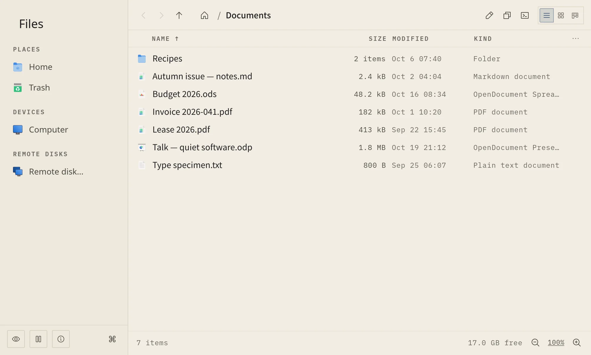
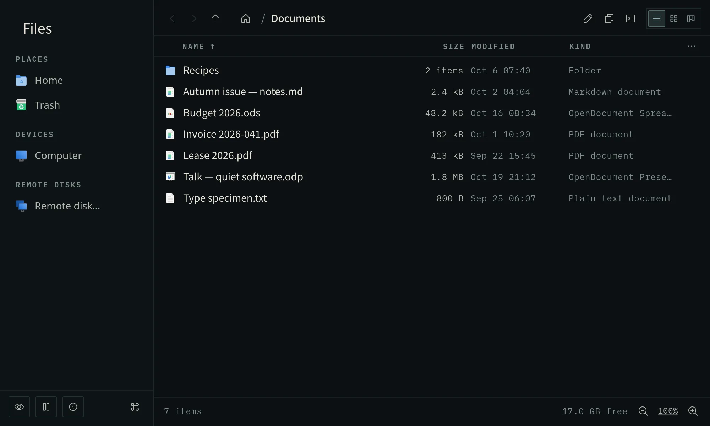
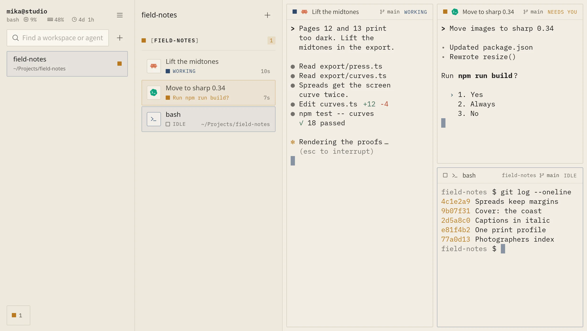
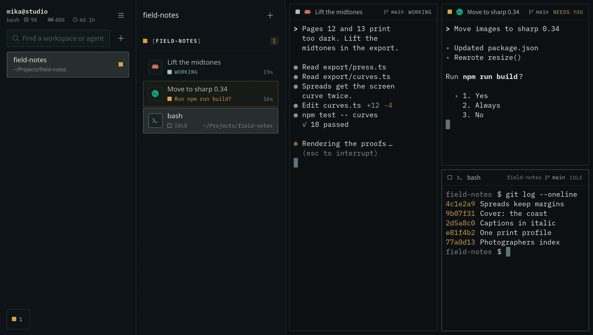
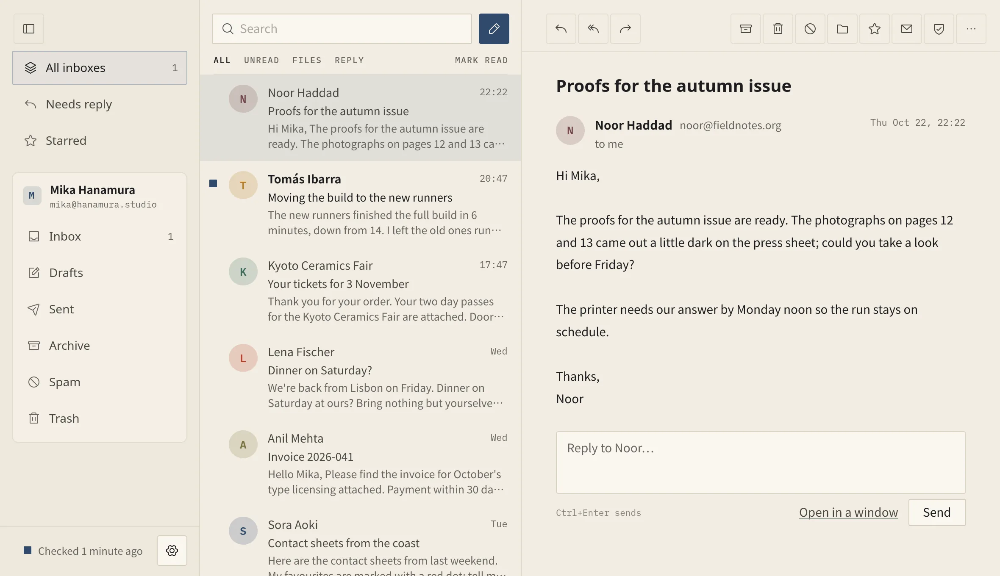
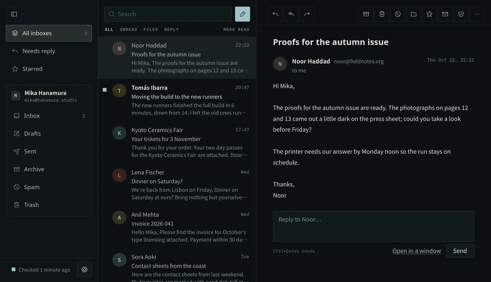
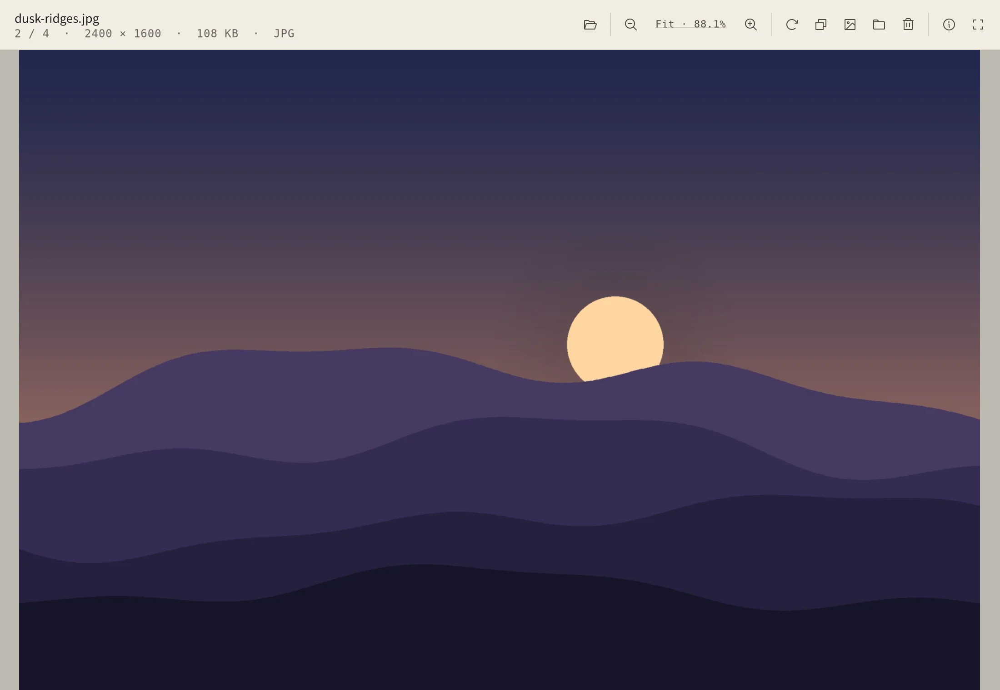
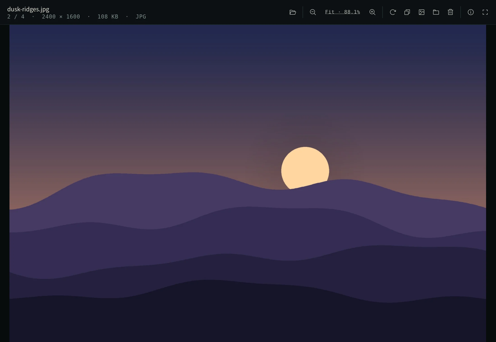
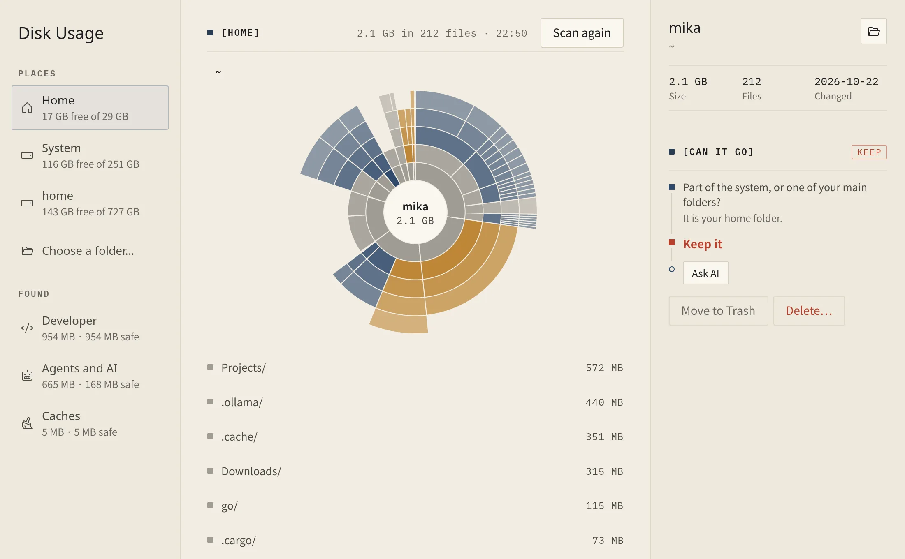
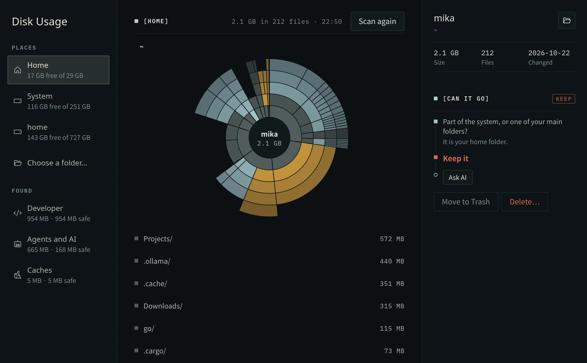

Made for inua, not bound to it.
Each app is a program of its own. In inua it takes the shell's colours and opens from the launcher and the dock; on another Wayland desktop, it opens all the same.
Files
A file manager, keyboard first: one or two panes, drives, and remote disks through rclone. inua-files


Terminal
Terminals for many agents at once, each one's state where you can see it. inua-term


Every account in one list. The assistant helps only when asked. inua-mail


Viewer
Images, PDFs, Markdown and plain text. Step through a folder with the next images already loaded, zoom and rotate, read a PDF page by page, or a README laid out with its tables and links. inua-viewer


Disk Usage
What fills a disk, and which of the folders developers and agents leave behind can go. inua-disk-usage


- Remote Desktop
- Other machines' desktops here, over Moonlight's protocol.
inua-remote - Mobile Link
- Your phone and this computer together, over KDE Connect's protocol.
inua-connect - Virtual machines
- Windows, Linux and FreeBSD guests, each one a folder.
inua-vm
Small windows that do one thing.
Clock, Weather, Calculator and nine more have a page of their own.
On another desktop.
They need a Wayland desktop with GTK 4, and start from your own launcher. Two things wait for the shell: Color Picker's pick from the screen, and sharing this desktop from Remote Desktop.
The install puts them in your launcher; with INUA_NO_SESSION=1 it leaves your login alone.